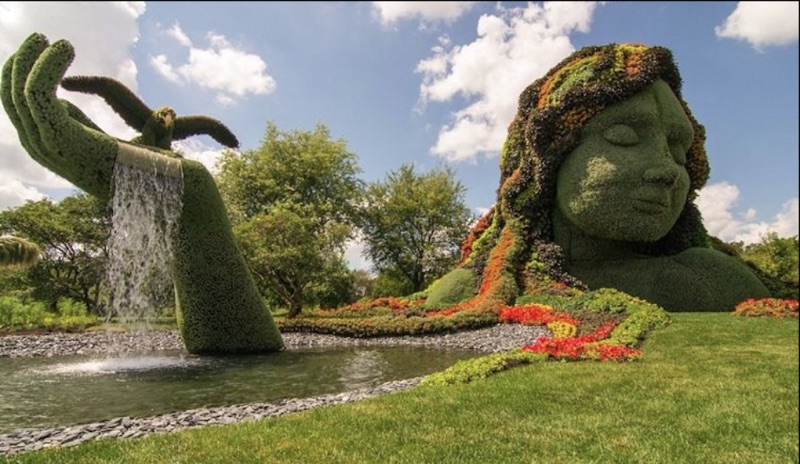
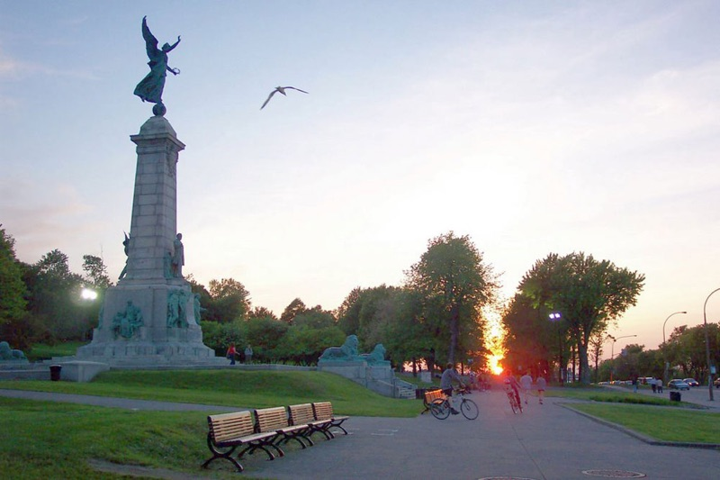

Montréal Botanical Garden
The Montréal Botanical Garden (French: Jardin botanique de Montréal) is a large botanical comprising (190 acres) of thematic gardens and greenhouses. Many go to enjoy the beautiful wildlife and exotic species offered in nature. There are nice trails going all throughout the garde. A great tourist destination!
Monunt Royal
Mount Royal is a mountain located downtown Montréal. It is also an extinct volcano that was active almost 125 million years ago. Many go for the hiking on beautiful trails and scenery. It is one of many places that Montréal has to offer and is not worth missing!